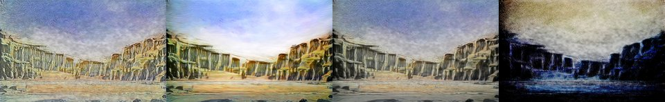

← Async Art — living works · all collections
by Hulki Okan Tabak · Async Art Master #4547 · four-phase · time rule: UTC
Updates four times a day to reflect sunrise / day / sunset / night cycles.

Sunrise 06:00–06:59 · Day 07:00–17:59 · Sunset 18:00–18:59 · Night 19:00–05:59 (UTC)
The full-size files live on IPFS; each is linked on three public gateways, in the order to try them (gateway.pinata.cloud, ipfs.io, dweb.link). Every line says what our own check found: 5 not pinned by us yet, 1 our own copy, pinned here and verified on upload.
QmS6KXHw8ZhcZ3… gateway.pinata.cloud · ipfs.io · dweb.link — not pinned by us yet, checked 2026-09-23 09:13QmeLFyvkBdRpxU… gateway.pinata.cloud · ipfs.io · dweb.link — not pinned by us yet, checked 2026-09-23 09:13QmNxnaUUrkB2LG… gateway.pinata.cloud · ipfs.io · dweb.link — not pinned by us yet, checked 2026-09-23 09:13QmR1GpbGx33a95… gateway.pinata.cloud · ipfs.io · dweb.link — not pinned by us yet, checked 2026-09-23 09:13bafybeihbsfxgx… gateway.pinata.cloud · ipfs.io · dweb.link — our own copy, pinned here and verified on upload, checked 2026-09-22QmbWpFbrKeF1bV… gateway.pinata.cloud · ipfs.io · dweb.link — not pinned by us yet, checked 2026-09-23 09:13QmeLFyvkBdRpxU… gateway.pinata.cloud · ipfs.io · dweb.link — not pinned by us yet, checked 2026-09-23 09:13QmeLFyvkBdRpxU… gateway.pinata.cloud · ipfs.io · dweb.link — not pinned by us yet, checked 2026-09-23 09:13QmR1GpbGx33a95… gateway.pinata.cloud · ipfs.io · dweb.link — not pinned by us yet, checked 2026-09-23 09:13QmS6KXHw8ZhcZ3… gateway.pinata.cloud · ipfs.io · dweb.link — not pinned by us yet, checked 2026-09-23 09:13QmNxnaUUrkB2LG… gateway.pinata.cloud · ipfs.io · dweb.link — not pinned by us yet, checked 2026-09-23 09:13Photography coupled with AI rendering and controlled randomization by HoT 4 piece set on Async Art Imaginary Ruins of a City Imagined by Hulki Okan Tabak Minted on Asycn Art, 2021
async.art · OpenSea · Etherscan
Generated archive pages. Content identifiers point to the public IPFS network.